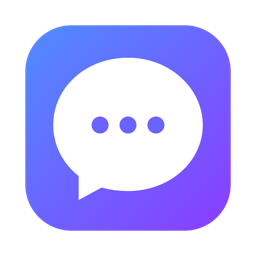

messageBae
A small macOS app for Facebook Messenger. A direct replacement for the old Messenger app for Mac.
Download for MacFeatures
A proper Mac app
- In your Dock, no browser needed
- Its own window, with a Dock badge and menu bar icon
- Stays logged in between launches
- Native Mac notifications, menus and sheets, not web popups
- Remembers your window size and monitor
- Resizable window and panels, and Messenger's own buttons all work
- Small and light, with no tracking, analytics or servers of its own
Faster chatting
- Familiar Mac shortcuts, listed below
- Click anywhere in a chat to start typing
- Swipe with two fingers to reply, double-click or hold to react
- Right-click to reply, unsend, fix spelling or save images
- Mute, and a notify mode that brings the window forward
- All links, Facebook ones included, open in your browser
- View stays locked, with a reset button if it ever shifts
Shortcuts
They work like iMessage and other Mac apps, so there's nothing new to learn.
- ⌘K
- Find a chat
- ⌘L
- Start typing
- ⌘1to9
- Jump to a chat
- ⌃Tab
- Next chat
- ⌃⇧Tab
- Previous chat
- ⌘U
- Attach a photo or file, or drag it in
- ⌘⇧M
- Mute on or off
- ⌘N
- Notify mode on or off
- ⌘B
- Clear the badge
⌘ Command · ⌃ Control · ⇧ Shift
Install
- Download the
.dmgfrom the latest release - Open it and drag messageBae into Applications
- Log in to Facebook
Signed and notarised by Apple.
Updates
messageBae tells you when a new version is out. Download the new .dmg from Releases and replace the old app. Your settings stay.
Supporters get auto update: donate any amount, copy the supporter code from the thank you page and paste it into . New versions then install themselves. Donations help cover the Apple developer account, domain and hosting.
How it works
messageBae opens Messenger in its own window and tweaks the page locally with a little JavaScript. There's no server in the middle: your Mac connects straight to Meta's servers, the same as a browser tab.
Known limitations
- Clicking a quoted message in a reply makes the screen jump briefly, as Messenger scrolls up and messageBae moves it back
Issues
Something not working? Open an issue on GitHub.